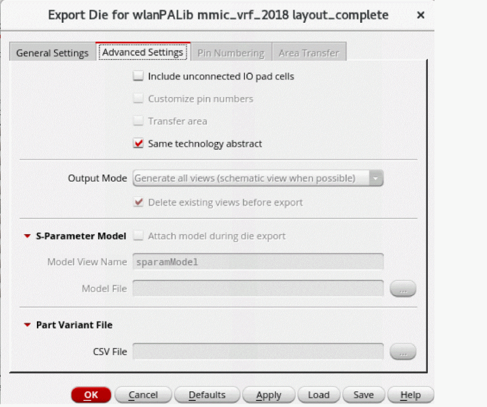
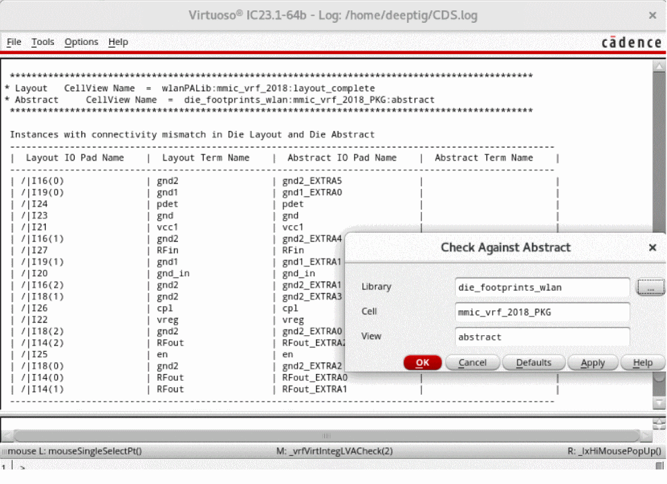
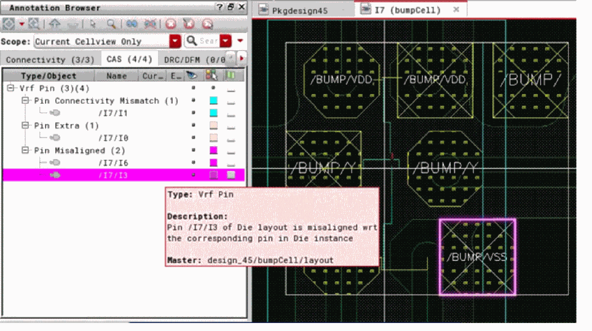
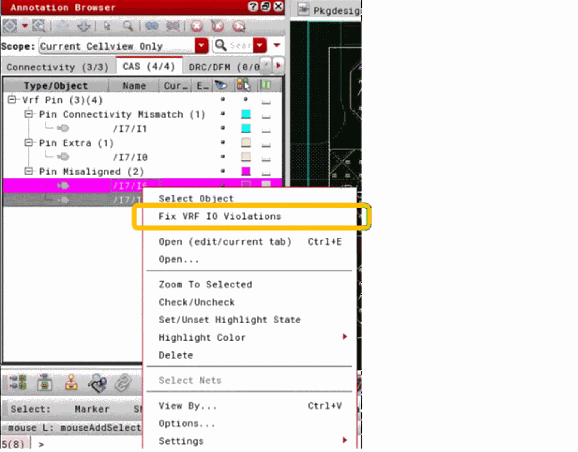

Creating and Verifying Integrity 3D-IC Compatible Die Abstracts
The die abstract needed for the Virtuoso Integrity 3D-IC flow is similar to the die abstract created by the usual Export Die command because it contains all the required bump information.
A die abstract for the Virtuoso Integrity 3D-IC flow has the following features.
- Uses the same technology information as an analog IC, which means that the bump master from the IC layout can be used to create bump instances in the die abstract.
- Bumps are connected to the top-level nets or terminals through instance-terminal-based connectivity.
- There are physical-only bumps and one top-level net can be connected to multiple bumps. Bus and terminal definitions are transferred to the die abstract.
- Die abstract follows the centering of the IC layout and is not necessarily centered at the origin.
- All instances and terminals follow the same naming convention as in the IC layout.
- Open the IC/die layout in Layout MXL.
-
Click Module – Export Die. The Export Die Form is displayed.
Ensure that the Cell name for the die abstract is same as the IC layout cell name. -
On the Advanced Settings tab, select the Same technology abstract option for the die abstract.
Most of the other options on the tab for creating a TILP are disabled because selecting the option creates only the die abstract view. The TILP super-master, schematic, and symbol views are not created because the abstract will not be used for package instantiation in Virtuoso. - Click OK to export the die.
To check and update the IC layout with the updated die abstract from iHDB:
-
Click Module – Compare Layout With Abstract – Check.
The Layout Versus Abstract (LVA) checker compares the IC layout with the die abstract and generates markers showing the differences. You can run the checker on all bumps or only the selected bumps in the IC layout.
Markers show the positions of violations, with more complete information provided in the Annotation Browser.
 -
Click Module – Compare Layout With Abstract – Fix. Alternatively, click Fix Virtuoso RF IO Violations from the shortcut menu in the Annotation Browser.
The command fixes the violations reported by the Check command by modifying the bumps in the IC layout as per bumps in the die abstract. This command is also selection based, which means violations specific to the selected bumps are fixed and specific bump modifications are brought into the IC layout. If no bumps are selected, all violations are fixed and all changes from the die abstract are brought into the IC layout.
Related Topic
Return to top